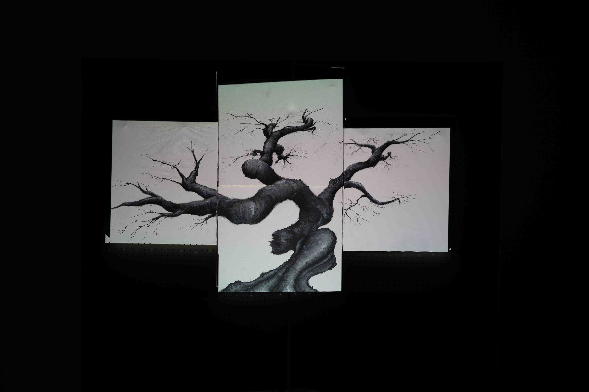
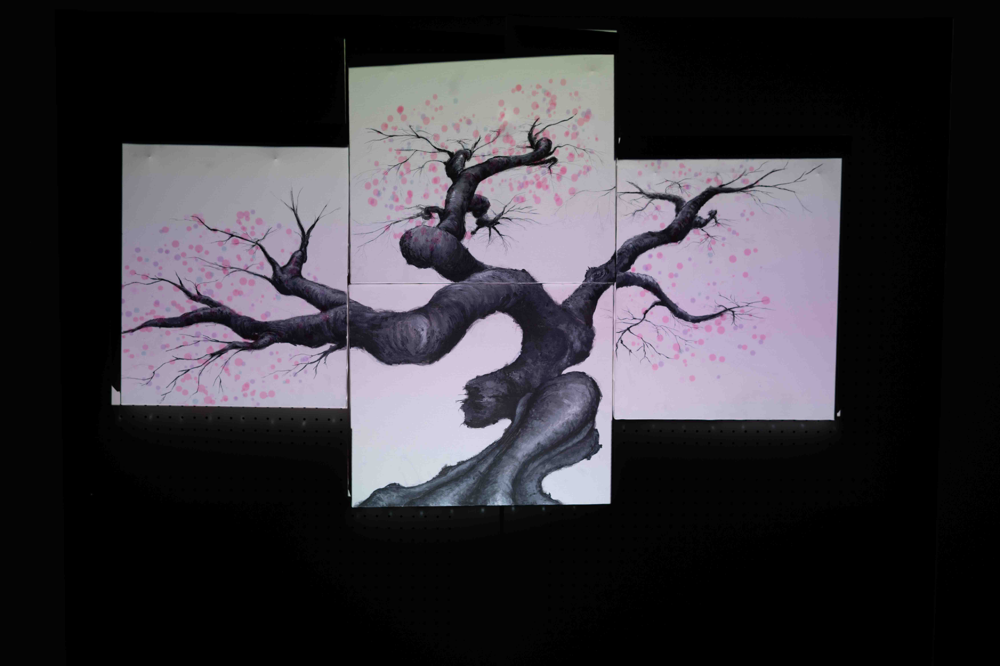

オープンキャンパス研究室紹介ブース展示用作品
「移ろい」
時が流れ、時は周り、季節は移ろう
樹木は花を咲かせ
散れば新緑の葉が芽吹く
秋になり紅葉し
冬が訪れば、葉を舞い散らす
時は絶えず流れ、再び季節は移ろう
| ジャンル | インタラクティブアート |
|---|---|
| 制作期間 | 約2ヶ月（実働1ヶ月） |
| 制作人数 | 4人 |
| 担当 | 制作進行・エンジニア |
| 動作環境 | Processing・Arduino ※ProcessingとはJavaをベースとした ビジュアルプログラミング言語 |

作品テーマは「環境とテクノロジー」。絵という静止した世界に、プロジェクターで映像を投影することで、時を与えるアナログとデジタルの融合を目指しました。
体験者は何も咲いていない冬枯れした木に、針のデバイスを回すことで花が咲き、春夏秋冬を体験することができます。